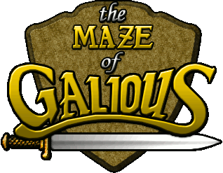
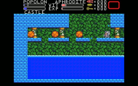

Home
The Maze of Galious (MoG in short) was originally a Konami game for the MSX computer system. Its real name is Knightmare II: The Maze of Galious and is the sequel of another Konami game called Knightmare.
MoG is a very addictive game where you have to kill thousands of enemies, collect items in order to obtain new powers and defeat some really great demons at the end of each level. The gameplay of MoG is not the boring linear one. In MoG you are free to go everywhere you want from the beginning of the game. You have to be very careful of the order in which you visit all the rooms in the HUGE map if you want to keep your character alive. The map is structured in a main map (called the castle) and 10 submaps (called the worlds). Initially you are in the castle and you have to find the keys that open the doors to go to each of the worlds. To complete the game you have to defeat the boss at the end of each one of the 10 worlds. You are free to revisit each world as often as you want in order to see if you have missed something. To defeat all 10 demons you control two characters: Popolon and Aphrodite. Each one has special abilities, i.e. Popolon has a greater ability to jump and Aphrodite is able to dive.
Forums and support
If you have any problems, questions or suggestions about Maze of Galious, feel free to join us at the Braingames forums, or even better, at the Maze of Galious forum. The forum is the place where you can find the latest developments, send us your contributions, send us fanmail or for just a friendly chat. You're welcome to join us!
News
15-03-2009
There are updated binaries available for Ubuntu/Debian now.
01-12-2008
Just two small updates:
- Applied the patch to support the weird passwords from the original, kindly provided by Gamut on our forums
- The Mac version is available as Universal Binary again, so it runs on both PPC and Intel Macs
17-04-2008
Some small updates this time:
- Added new password generator (v0.21) with load/save option. By Lars18th.
- More musics and sound effects were added to the Jorito sound set
- We're back to using SDL_sound again, so musics should loop properly again
- And some minor code/text fixes
10-03-2008
After a long period of silence we did some work on the Maze of Galious remake again. The most visible result of that is this new website. Also some other long overdue work has finally been taken care of. In a short list, here's what's new:
- New website
- Binary downloads for both Mac OSX and Ubuntu Linux
- A much improved version of the Jorito sound set with improved music and new sound effects
- Tweaked remake so it needs less CPU power
Story
This is a legend that has been told since long, long ago...
In order to save Aphrodite, the princess of Greek, who was kidnapped by the dark overlord Hudnos, the good knight Popolon set out for the dark castle located in the depths of Mount Atlas. However, it actually was a trap set by the evil high priest Galious. He used evil spirits to do his bidding and was well versed in black arts. He sold his own soul to the devil and was the very incarnation of evil. In Popolon's absence, Galious invaded the kingdom of Greek along with his demons and made the kingdom his base for his plans to turn the world into a realm of darkness. The true dark castle was Castle Greek itself! Galious then went to heaven and kidnapped the yet unborn Pampas, who was to be born to Popolon and Aphrodite and shut the baby away in the castle.
After rescuing Aphrodite, Popolon returned to Castle Greek. He sensed a strange presence about the castle and soon derived what had happened. In order to take back Castle Greek and rescue their future child from the hands of the dark powers, the two entered the gates of the castle knowing that this could cost them their lives.
The stage is now set for the true climax to 'The Demon Legend'...
Screenshots
Here you can see some screenshots of the game. As you can see, the game features different graphic sets. You can choose from these at will.
Naramura graphic set

Hinox graphic set

Boltian graphic set
Alternate graphic set
Download
The Maze of Galious remake is available for Windows, Mac OS X and Linux computers.
We provide binary versions for both Windows and OSX, for Ubuntu/Debian you can download a .deb file. For Linux or other computers you can find the source code for the game in the Linux download.
Official releases
You can download the remake from our primary server or from our mirror. File size is about 30MB, since the download contains all graphics and datasets. You can also try one of the nightly SVN exports for the most current version.
Other downloads
There's also some extra goodies you might be interested in:
How to play
The objective of this game is to recapture Castle Greek and the 10 worlds from the evil demons, slay the evil high priest and rescue our brave couple's future baby Pampas.
Our main characters are Popolon and Aphrodite. They each have their own special talents and you must learn how to use them appropriately according to the situation as you proceed through the game. To have them change places, press the option key to display the option window.
In the castle there are hidden weapons that are effective against certain enemies. Collect these weapons and try to discover which weapons work best against the monsters. They can be selected through the option window.
Our heroes have VIT (vitality) and EXP (experience). If the EXP meter is full, the VIT meter is refilled. The 'Great key' adds 8 levels to your 'Maximum Vitality'.
Controls
These are the default controls of the game. They can be redefined in the options menu.
| Key |
Action |
Info |
| Cursor up |
Jump up, climb up ladders |
|
| Cursor down |
Climb down |
|
| Cursor left |
Walk to the left |
|
| Cursor right |
Walk to the right |
|
| Space |
Attack |
Can also be done while jumping |
| F-1 |
Option key; select player/item |
|
| F-2 |
Pause |
|
| F10 or 9 |
Select graphics set |
|
| F11 or 0 |
Select music set |
|
| ESC |
Back to title screen |
|
| ALT+ENTER |
Switch between full-screen and window mode |
For Windows and Linux |
| Apple key+F |
Switch between full-screen and window mode |
Only for Mac OS X |
| F12 |
Quit |
For Windows and Linux |
| Apple key+Q |
Quit |
Only for Mac OS X |
Characters and components
Popolon
Popolon is a true warrior. He saved Aphrodite in the previous game, Knightmare.
Popolon can destroy rocks a lot faster than Aphrodite can, but he'll rapidly lose power in water. Popolon can pass through revolving doors, while Aphrodite can't. And his jumping height depends on how long the UP key is pressed.
Aphrodite
Aphrodite is the Greek Goddess of love.
Aphrodite can swim, while Popolon can't. She can make three shots at a time, while Popolon can only shoot two. The same is true for mines; she can put three down. Also, the jumping height is constant with Aphrodite.
Enemies
There's a lot of different bad guys in the game. Their only aim is to watch you die! Above is a small selection of the early enemies.
Keys
Great keys unlock the access to a new world whereas small keys can be used to open normal doors.
Weapons
During your trip through the castle you can pick up arrows, fire and mines to harras your enemies.
Shrines
Throughout the castle various shrines can be found. Here you can save your game with a password, buy weapons or items and get advice from the Gods.
But there's more!
Of course this is only a brief glimpse of everything the game has to offer. There's lots of other items, enemies, demons and worlds for you to conquer!
Password decoding
Maze of Galious contains a password system that's used to restore your games. Because this is an integral part of the game this also should be present in the remake. Therefore Santi decided to decode the password system and write down his findings. You can read all about this on the special password decoding page.
Credits
The game was made from 2002 onwards by the following people:
Coding
- Santi Ontañón (Spain)
- Jorrith Schaap (Netherlands)
Graphics
- Santi Ontañón
- Boltian from Spain
- Hinox from Spain
- MP83 from Finland
- Naramura from Japan
Music & SFX
- Rob Powelse from the Netherlands
- Jorrith Schaap
- Bart Roijmans from the Netherlands
- Wolf_ from the Netherlands
- Randy Wintjes from the Netherlands
Maps
Beta testing
- Koiote from Spain
- Henk Bosman from the Netherlands
- Patrick van Arkel
- Wisam al-Rawi from Iraq
- Max Attar Feingold from the US
- Sergi Garcia Besora from Spain
- Zita Miranda Martinez from Spain
- Menno Haeck from the Netherlands
- Janne Vieri from Finland
)

){kind=link}
){kind=link}
){kind=link}
){kind=link}
){kind=link}
){kind=link}
){kind=link}
){kind=link}
){kind=link}
){kind=link}
){kind=link}
){kind=link}
){kind=link}
){kind=link}
){kind=link}